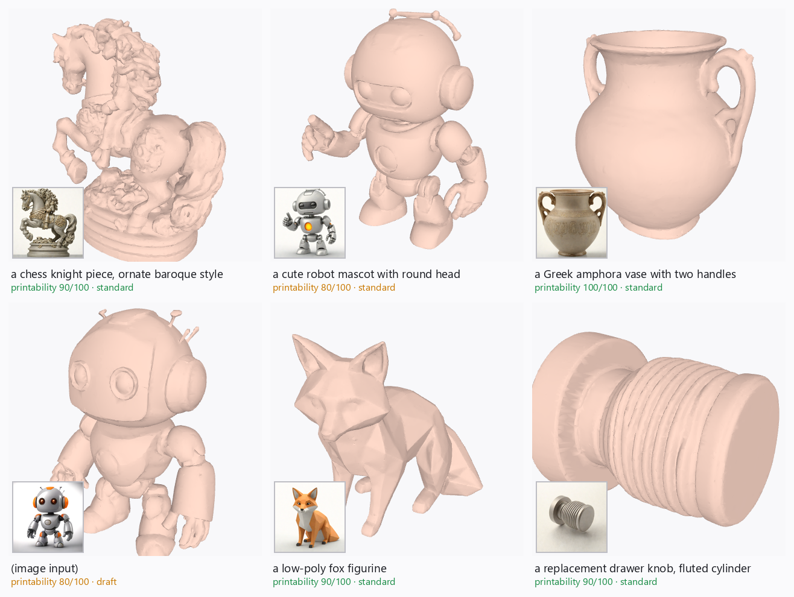

Image→3D models make impressive meshes that fail at the point of use: not watertight, no UVs, no physical scale, floating debris, orientations that drown FDM prints in support material. MeshSmith is the missing last mile — from "look at this mesh" to "here is the STL your slicer accepts."
torch.cuda API; ROCm maps it to HIP.pip in any
rocm/pytorch container.standard| Prompt | 3D s | Total s | Score |
|---|---|---|---|
| drawer knob, fluted | 72.4 | 130.2 | 90 |
| low-poly fox figurine | 72.1 | 129.2 | 90 |
| Greek amphora vase | 76.7 | 181.3 | 100 |
draft preset (mini-turbo DiT): ~25 s/asset warm.
Across all five benchmark runs auto-orientation cut support volume by
0–82% (0% = the amphora, already upright — the search correctly
leaves good orientations alone).

Inset = the generated concept image, large = the finished mesh. Organic figures, hard-surface parts, vessels — and bottom-left, a photo taken straight to 3D. Every asset ships with a printability report: watertight ✓ · auto-orientation (support saved %) · wall thickness min/p05 · bed fit · score /100.
pip install -r requirements.txt
python app.py # Gradio UI + 3D viewer
python -m meshsmith.cli "a chess knight" --quality high